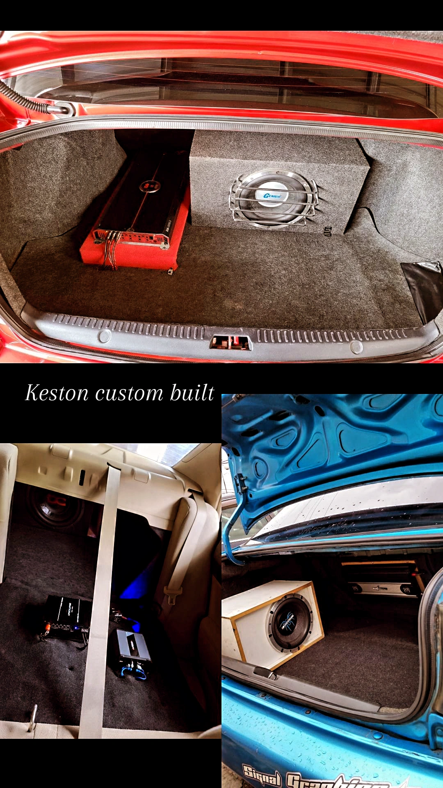

Car-Customizing
What helps me escape and get my focus back on life is a long drive while listening to music on a custom built music system. Now I don’t do the electrical part of the work, I just assist in getting the material and helping when needed with installation. But customizing the music system in any car that I have owned has become a hobby. It has become part of me so much, that driving without music, causes me to feel incomplete. I love music and when integrated with a wonderful sound system, it becomes magical.
